アユタヤ郊外の
ワットガイ。
ガイとは鶏の意味なのだが、実際に行ってみたら
猿の寺だった。
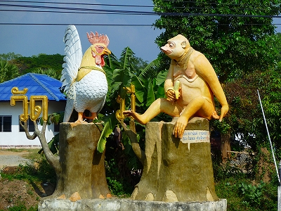
…てなことを象徴するような入り口の鶏と猿。
ここワットガイは
地獄のある寺なのだが、それ以外にも
見所がたくさんあるので
地獄編と
地獄じゃない編の２つに分けて皆様にお届けする次第。
んでまずは地獄じゃない編から。
中に入る前にこの寺のアウトラインのご紹介。
この寺はアユタヤの中心部から25キロほど北に位置する。周辺は田園地帯で
中部タイの典型的な田舎と考えていただきたい。
寺の裏手には川が流れていて牧歌的な雰囲気を醸し出している。
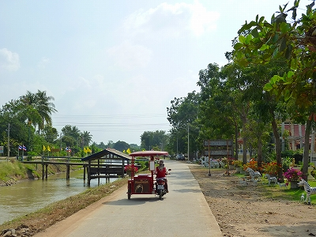
元々はアユタヤ朝時代からあった寺らしいが、現在の寺は
1990年代に復活したのだという。
この地で疫病によって鳥が大量に死んだ（殺された？）ためワットガイ、鶏寺と名づけられた、と案内板に書いてありました。
川側から見ると寝釈迦さんの後姿が見える。結構大きいがタイではこのくらいの大きさは標準サイズだ。
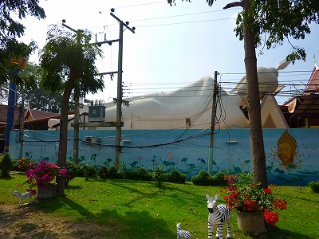
鶏の置物。
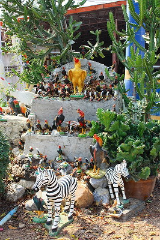
スパンブリの
ナレースワンの鶏信仰を挙げるまでもなく、アユタヤ周辺は鶏の像を奉納する習俗が盛んだ。
ましてやここは鶏寺。鶏の置物が大量に置かれている。
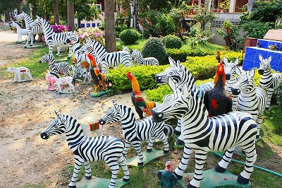
しかしそれにも増して
シマウマが大量にあるのは何故だ？
お寺の隣には寺が運営する学校もあった
で、境内に入ると立派な鶏のオブジェがお出迎え。
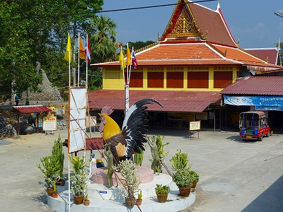
若干マッドなパゴダや
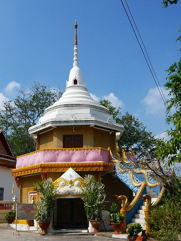
何かの寓話を表しているのであろうコンクリジオラマがあったりする。
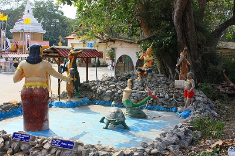
人魚、笛を吹く人、豹柄の行者…
おお、このシーンはかつて
コサムイで見たぞ。
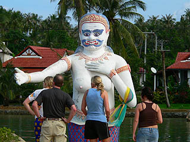
うっ、髭おばちゃん。強烈。
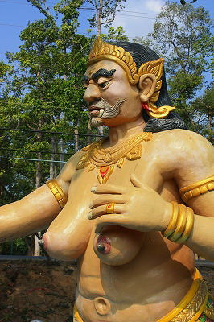
タイに来ると初日くらいはこういう光景↓が珍しくてはしゃいでしまうのだが、2日目以降は慣れちゃうのが恐ろしい。
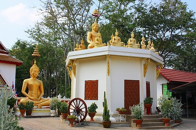
日本にあったら結構大きめの大仏さんなんですけどねえ…
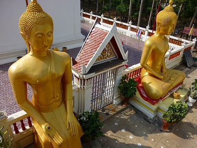
そんなこんなで一番大きな建物に入る。
とはいえ外壁がない屋根だけの建物なのだが。体育館のように大きい。
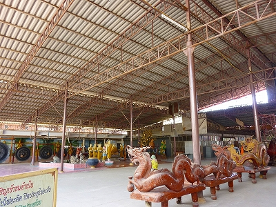
正面には先に後ろから拝見した寝釈迦さんが。あ、どうも先ほどは後ろから失礼しました。
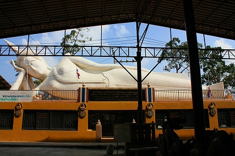
この広いスペースには
様々な機械じかけの娯楽装置（なのか？）が置かれていた。
例えばこちら。
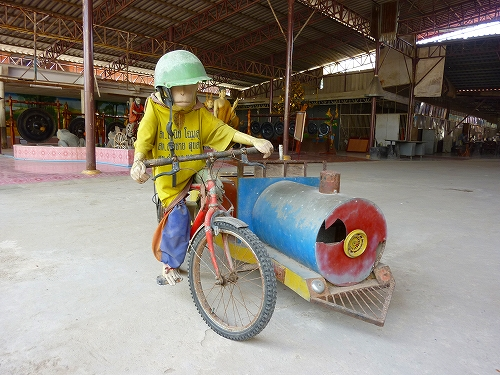
猿がチャリを漕いでくれるライドマシン。
コインを投入しようとしたら傍らに居た坊さんが身振り手振りで「ソレ、動かないよ」と説明してくれた。
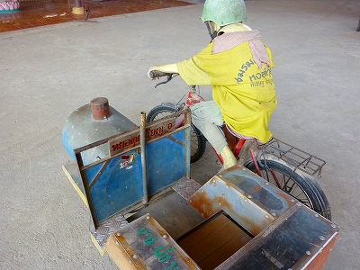
それじゃあ、コレはどうだ！
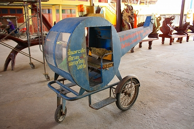
…コレも故障してるとか。
見れば、片隅には様々なライドマシンの残骸が。
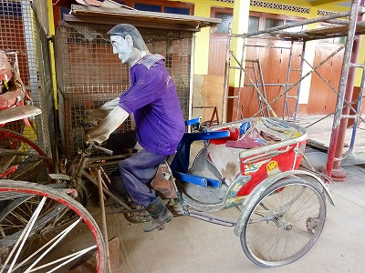
おお、コレはかつて
ワットパーラックローイや
ワットプートウドンで見た
チャリンコギミックじゃないか！
ココのは骸骨じゃなくて猿だけど。
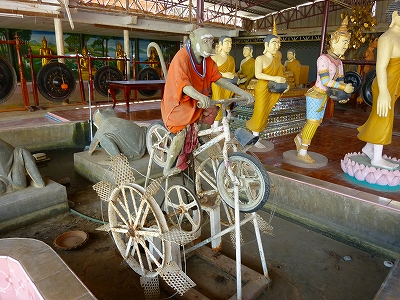
しかし…ここも残念ながら故障。
想像するに、本来であればここには水が張ってあり、コインを投入するとサルがチャリを漕ぐ→水車が廻って背後にいるカエルの口から
レーザービームが飛び出す→その向かいにある金ぴかの仏像に反射！→その向かいにいる私が
大爆発！というピタゴラスイッチ的な仕組みになっていたはず…あ～、故障してて良かった～！爆発するとこだったわ～。あぶねー、あぶねー。
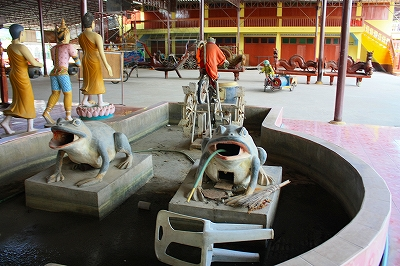
唯一稼働していいたのが↓こちら。コインを投入したらゆっくり、ゆっくり臼を引いてましたよ。
こちらは猿の臼突き。これまた故障中だったがこのポジショニングからどうやって猿が動くのかを想像するのも楽しい。
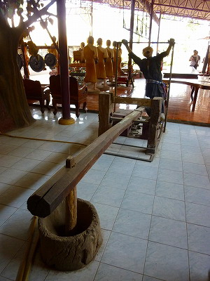 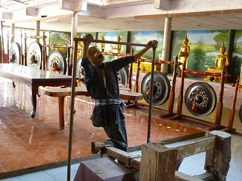
地元のチビッコ達も若干期待はずれ感を漂わせつつ楽しんでおりました。
いいんです、この程度で。
100パーセント刺激的な施設である必要などないんです。そもそもB級なんだから。
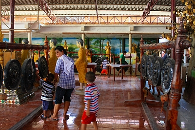
こちらはしっかり稼働中。って喧しい音楽が鳴るだけなんですけどね。
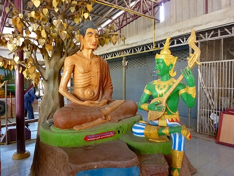
昼下がりのアンニュイな時間帯。
ワンちゃんたちも仲良く故障中。良く見りゃ先ほどのお坊さんもウツラウツラしてました…
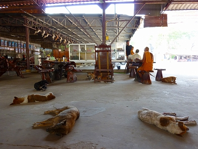
隣の休憩スペースには
水牛の頭蓋骨がズラリと並んでいた。
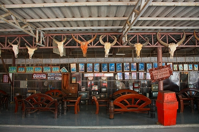
圧巻である。意味は不明だが。
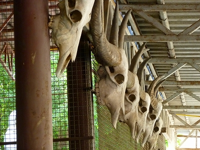
そしてこの寺で最大のミステリー、というか不思議だったのはこのズラリと並んだ
クラシカルな時計。
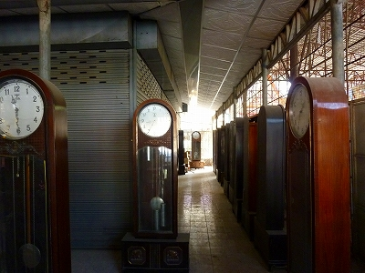
さらにテレビ。
勿論、
液晶とか地デジなど一切無縁の旧式のテレビ。
つけたらドリフやってんじゃねえのか、と思えるほどクラシックな製品もあった。
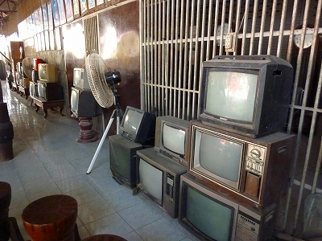
何なんだろう、この寺の
メカニカル偏愛具合。
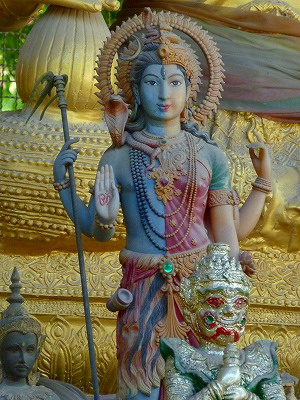
キカイダーもいるし。
そんなこんなで屋外に移動。
凄い密度でコンクリ人形が並んでいるのですよ。
人力車ならぬ猿力車。
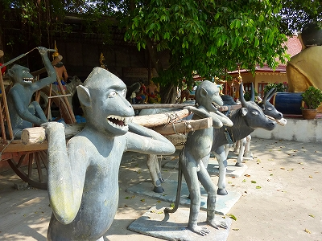
こちらもチョット見、100円ライドっぽい感じですが、十二支の仏像です、仏像。
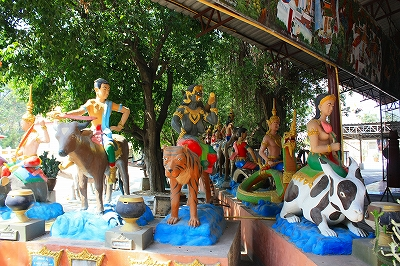
これも動きません。念のため。
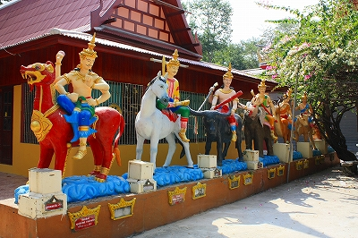
弥勒サマもかなりリラックスしてます。
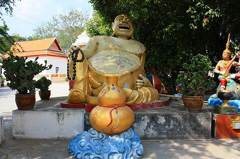
コレも良く見るコンクリ像。
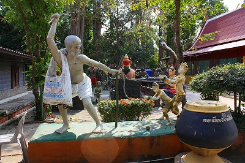
子供をヒモで繋いで鞭を振るジジイ。人買いなのだろうか？
そんな
ジジイのエコバックに賽銭を入れるようになっているのは人道上如何なモノか?
仏陀を攻め込まんとするヤック（鬼）の図。
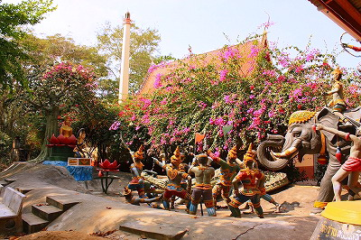 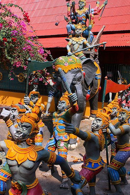
ブーゲンビリアの花が眩しすぎるほど。
想像するにコレはビルマの侵攻を表しているのでは？
この寺はアユタヤ朝時代に栄えたがビルマの侵略によって壊されたという。
400年前の話だが、こうして何度も何度も繰り返し語られ続けられることで、現代のタイ人も昨日のことのように恨みや敵対心を再現するのだろうか。